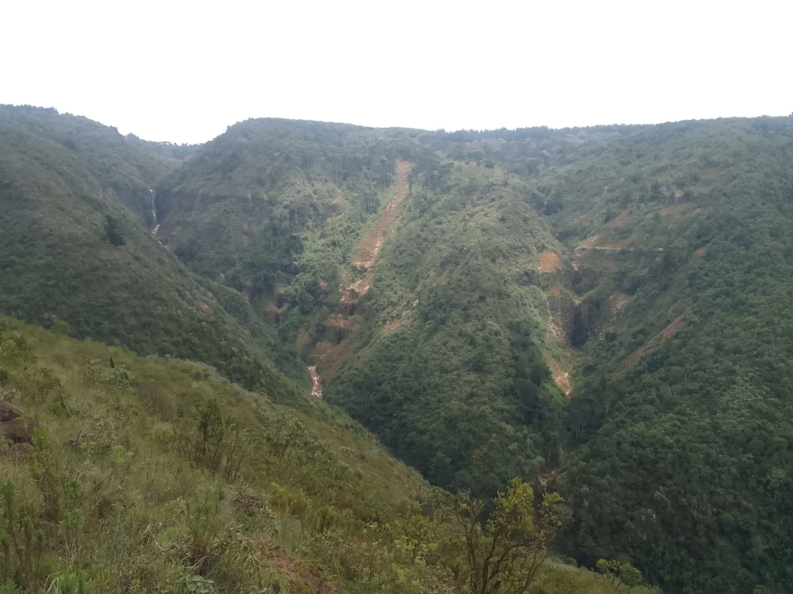

KENYA HIKING GUIDE
Hiking Groups in Kenya: How to Find and Join Guided Group Hikes
Looking for Hiking Groups in Kenya?
Searching for hiking groups in Kenya? Joining an organized hiking group can be a practical way to discover new trails, meet other outdoor enthusiasts and explore Kenya's landscapes with people who share an interest in hiking and nature.

Kenya has a wide variety of hiking environments, including hills, forests, escarpments, mountains, valleys and countryside trails. Depending on the route and event, hikers can choose between shorter day hikes, weekend adventures and more demanding outdoor experiences.
For people searching for guided hiking groups in Kenya, organized hikes can also simplify some aspects of planning, including route information, meeting points, group communication and local guidance.
Kijabe Adventures organizes guided group and private hiking experiences in Kijabe and other destinations across Kenya. This guide explains how hiking groups work, who can join, what to look for when choosing a group and how to prepare for a successful day on the trail.
What Are Hiking Groups?
A hiking group is a collection of people exploring a trail or outdoor destination together. Groups can be informal communities of friends and colleagues, organized hiking clubs, outdoor communities or professionally guided hiking events.
An organized group hike may have a designated meeting point, planned route, guide, schedule and booking process. Depending on the event, transport or other logistical arrangements may also be available.
The exact services offered by a hiking group vary. Before joining, check the event description carefully so you understand what is included in the advertised fee and what you need to arrange independently.
Types of Hiking Groups in Kenya
Not all hiking groups operate in the same way. Understanding the different types can help you find an experience that matches your schedule and preferences.
1. Guided hiking groups
These groups hike with a designated guide or hiking team. Guided hikes can be useful when exploring an unfamiliar trail or destination.
2. Hiking clubs and outdoor communities
Hiking clubs and outdoor communities can bring together people who regularly participate in hiking, nature walks, fitness activities and outdoor adventures.
3. Social hiking groups
Some groups focus on the social side of hiking, allowing participants to meet new people while exploring outdoor destinations.
4. Private hiking groups
Private groups can be arranged for couples, families, friends, schools, companies and organizations that prefer to hike together on a more personalized schedule.
5. Corporate and organization hikes
Outdoor activities can also be organized for workplace teams, community organizations and other groups looking for a shared outdoor experience.
Why Join a Hiking Group in Kenya?
Meet other hikers
One of the social benefits of joining a hiking group is the opportunity to meet people who enjoy nature, fitness, photography and outdoor adventure.
Explore unfamiliar trails
Exploring a new trail can be easier when you have route information and guidance from people familiar with the area. Local guides may also provide information about trail conditions and the surrounding environment.
Simplify planning
Organized events can provide a defined date, meeting point and itinerary, which can reduce the amount of individual planning required.
Enjoy a social outdoor experience
Some people enjoy the motivation and social interaction that comes with hiking alongside other people. A group environment can also make a solo hiker's first organized hike feel more structured.
Discover new destinations
Hiking groups can introduce participants to destinations they might not have considered visiting independently.
Who Can Join a Hiking Group?
Depending on the route and event requirements, hiking groups may include beginners, experienced hikers, solo travelers, couples, families, friends, corporate teams and visitors exploring Kenya.
Beginners should pay particular attention to the stated route difficulty, distance and expected duration. A hike that is suitable for an experienced trail runner may not be appropriate for someone completing their first long-distance hike.
If you are unsure whether a particular event matches your experience level, contact the organizer before booking and ask about the route, terrain and expected hiking time.
Can I join a hiking group alone?
Yes. You do not necessarily need to bring friends or family to participate in an organized hiking event. Many people join scheduled hikes individually and meet other participants at the event.
How to Choose a Hiking Group in Kenya
When comparing hiking groups, look beyond photographs and social media posts. Clear information about the actual hike can help you understand whether the event is appropriate for you.
Check the destination
Confirm exactly where the hike will take place and whether the destination matches what you want to experience.
Check the route difficulty
Look for information about terrain, distance, elevation and approximate hiking duration. Ask questions if the difficulty is not clearly explained.
Confirm the date and meeting point
Check the reporting time and exact meeting location before travelling. Arriving late can affect the group schedule.
Understand the cost
Ask what is included in the advertised hiking fee. Depending on the event, transport, meals, park charges or other costs may be handled separately.
Check what you need to bring
A good hiking organizer should provide participants with practical information about footwear, water, clothing and other equipment needed for the route.
Look for clear communication
Confirm that the organizer provides reliable contact and booking information and communicates important changes before the hike.
- Destination and route information
- Date and meeting point
- Approximate duration
- Difficulty information
- Cost and payment instructions
- Equipment and packing guidance
- Emergency and safety communication
Hiking Groups Near Nairobi
Nairobi is a common starting point for people searching for hiking groups near Nairobi and weekend outdoor activities. The wider region provides access to hills, forests, escarpments and countryside landscapes.
For people who do not want to organize a hike independently, joining a scheduled group can provide a straightforward way to discover a new trail while meeting other hikers.
Kijabe Hills is one destination to consider when planning a guided hiking experience from the Nairobi region. Always confirm the current event schedule and meeting arrangements before travelling.
If you are interested in day hikes around Nairobi, also read our guide to the best day hikes near Nairobi .
Kijabe Hills Group Hikes
Kijabe Hills is one of the destinations featured by Kijabe Adventures. Located in Kijabe, Kenya, the area provides an elevated landscape with views across the surrounding countryside and Great Rift Valley.

Depending on the route, hikers may experience countryside paths, grassland, forested sections, rocky terrain, viewpoints and other natural features.
A guided Kijabe Hills hike can also provide opportunities for outdoor photography and interaction with other hikers while exploring the landscape.
Upcoming Kijabe Hills Group Hike
The currently listed Kijabe Hills group hike is scheduled for Sunday, 4 October 2026.
| Destination | Kijabe Hills |
| Location | Kijabe, Kenya |
| Date | Sunday, 4 October 2026 |
| Hiking Fee | KSh 2,000 per person |
| Booking Fee | 30% |
| M-Pesa Till | 5440810 |
Event information can change. Visit the Upcoming Hiking Events page for the latest date, route, meeting information and booking instructions before making travel arrangements.
Private Hiking Experiences in Kenya
Not every hiker wants to participate in a scheduled group. Private hiking experiences provide an alternative for people who want to organize an outdoor activity around their own group.
Private hikes can be considered by:
- Couples looking for an outdoor experience
- Families
- Friends
- Corporate teams
- Schools and organizations
- Private travel groups
Visit our Private Group Hikes page for more information and booking options.
Looking for a Private Adventure?
Talk to Kijabe Adventures about arranging a hiking experience around your group.
Explore Private HikesWhat to Carry When Joining a Hiking Group
Your packing list should depend on the destination, route, duration and expected weather. For a typical day hike, consider carrying the following:
- At least 2 litres of drinking water
- Comfortable hiking shoes or boots with good grip
- Energy-rich snacks
- Hat or cap
- Sunscreen
- Light rain jacket
- Small backpack
- Fully charged mobile phone
- Power bank
- Personal essentials
Dress for changing conditions
Layering can be useful when temperatures change during the day. A light waterproof layer can also be helpful when weather conditions are uncertain.
Avoid unnecessary weight
Carry the essentials without overloading your backpack. Unnecessary weight can make longer climbs and descents more tiring.
Hiking Group Safety and Preparation
Good preparation is important whether you are an experienced hiker or joining a hiking group for the first time.
Stay with the group
Follow the instructions of your guide and avoid leaving the designated route without informing the hiking team.
Pay attention to weather conditions
Rain, strong winds, heat and reduced visibility can affect trail conditions. Follow the guide's instructions if conditions change.
Stay hydrated
Carry sufficient water for the planned route and duration of the hike.
Protect the environment
Responsible hiking means keeping trails clean, carrying waste with you and avoiding unnecessary damage to vegetation and natural surroundings.
For additional information, visit our Hiking Safety page.
Frequently Asked Questions About Hiking Groups in Kenya
How can I find hiking groups in Kenya?
You can find hiking groups through organized hiking companies, local outdoor communities, hiking clubs, social groups and scheduled guided hiking events. Kijabe Adventures publishes upcoming guided hikes on its Upcoming Hiking Events page.
Can beginners join hiking groups in Kenya?
Yes, provided the selected route is appropriate for their experience and fitness level. Always check the advertised difficulty and ask the organizer for guidance if you are unsure.
Can I join a hiking group alone?
Yes. You can join a scheduled group hike individually. Organized hikes can provide an opportunity to meet other outdoor enthusiasts while exploring a destination with guides.
What should I carry when joining a hiking group?
Carry drinking water, suitable hiking footwear, snacks, sun protection, a light rain jacket, a small backpack, a charged phone and a power bank. Adjust your equipment according to the specific route and weather.
Are private hiking experiences available?
Yes. Kijabe Adventures offers private hiking experiences for couples, families, friends, organizations and other groups.
Where can I join a guided Kijabe Hills hike?
Check the Upcoming Hiking Events page for current Kijabe Hills group hikes, dates, meeting information and booking instructions.
Join Your Next Hiking Adventure
Explore Kenya with a guided group hike or arrange a private hiking experience for your own group.
Upcoming Group Hikes Private Group Hike Contact Kijabe Adventures